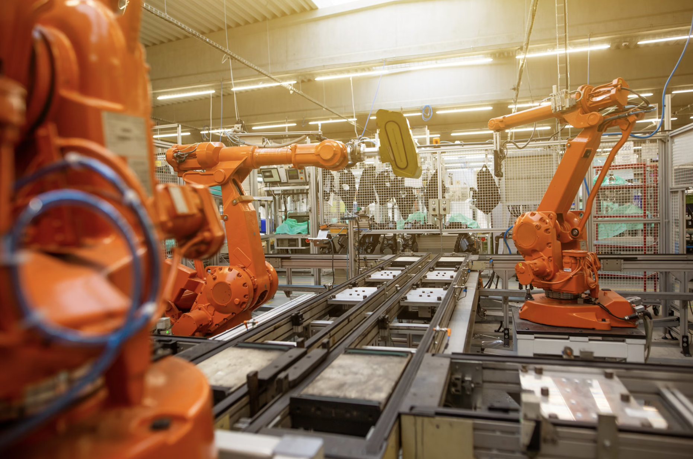

Manufacturing Projects
AI in Manufacturing
Industry 4.0 analysis on how AI drives quality, predictive maintenance, and production efficiency.
Project Details
Synthesized research on AI-enabled inspection, forecasting, and scheduling to quantify impacts on cost, throughput, and sustainability. Discussed integration challenges and workforce implications to guide adoption strategies for advanced manufacturing.
Six Sigma Process Improvement (Additive Mfg.)
DMAIC-based evaluation of a 3D printing process to reduce variability and improve repeatability.

Project Details
Collected dimensional data; built X̄–R control charts; performed ANOVA/DOE and nested Gage R&R. Confirmed overall process stability; identified measurement repeatability as primary source of residual error; proposed calibration and sampling improvements for tighter tolerances in additive manufacturing.
Manufacturing Systems Optimization Study
Integrated line balancing, MRP/BOM, and reliability modeling into one applied manufacturing study.

Project Details
Explored foundational methods in manufacturing systems including assembly line balancing, Materials Requirement Planning (MRP), Bills of Materials (BOM), and reliability modeling. Developed process flow diagrams, evaluated workstation allocation strategies, and applied dependent demand scheduling to understand how manufacturers optimize efficiency and reliability. This study emphasizes lean principles, process planning, and systems thinking as applied to real-world production challenges.